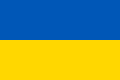
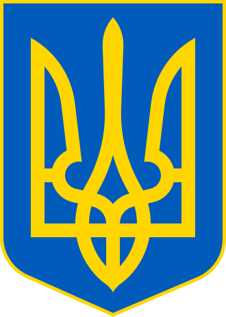
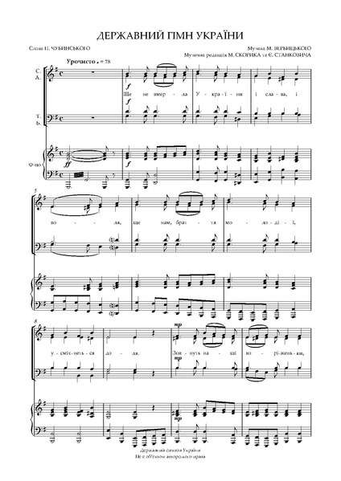

Офіційні символи
До офіційних символів відносяться:-
Прапор
Державний прапор України — сучасний прапор України, стяг із двох рівновеликих горизонтальних смуг синього й жовтого кольорів. Співвідношення ширини прапора до його довжини 2:3.
 -
Герб
Державний герб України, або малий Державний Герб України — офіційний символ держави Україна у вигляді золотого тризуба на синьому щиті.
Тризуб був затверджений як малий герб України 19 лютого 1992 року постановою Верховної Ради разом із своїм графічним зображенням. У 1996 році його статус був закріплений у Статті 20 Конституції України, де він також згадується як «Знак Княжої Держави Володимира Великого».
-
Гімн
Державний гімн України, або славень, — один із головних державних символів України поряд із прапором і гербом. Державним гімном є пісня «Ще не вмерла України і слава, і воля»: слова Павла Чубинського, музика о. Михайла Вербицького. Офіційна музична редакція ухвалена Верховною Радою 15 січня 1992 року, текст гімну затверджено законом України «Про Державний гімн України» 6 березня 2003 року.
26 лютого 2022 року Державне агентство України з питань мистецтв та мистецької освіти закликало музикантів включати в концертні програми та виконувати державний гімн України в підтримку українського народу.
Географія
Загальна площа України становить 603 700 км², вона становить 5,7 % території Європи й 0,44 % території світу. За цим показником вона є другою за величиною серед країн Європи після 💩 (або найбільшою країною, яка повністю лежить у Європі).
Площа виключної морської економічної зони України становить 72 658 км². Код країни за системою ISO 3166-1-alpha-2 — UA. Територія України витягнута із заходу на схід на 1316 км і з півночі на південь на 893 км, лежить приблизно між 52° 20′ та 44° 23′ північної широти й 22° 5′ і 41° 15′ східної довготи.
- Крайній північний пункт — село Грем'яч (урочище Петрівське) Чернігівської області.
- Крайній південний пункт — смт Форос Автономної Республіки Крим.
- Крайній західний пункт — село Соломоново Закарпатської області.
- Крайній східний пункт — село Рання Зоря Луганської області.
- Географічний центр України розташований на північній околиці села Мар'янівка Звенигородського району Черкаської області.
- Згідно з однією з методик вимірювання, географічний центр Європи розташований на території України, неподалік міста Рахів Закарпатської області.
Найбільшими чорноморськими портами є Одеса, Чорноморськ, Херсон, Севастополь, азовськими — Маріуполь, Бердянськ, Керч.
Загальна протяжність кордонів 6993 км, із них сухопутних 5638 км. Довжина морської ділянки кордону: 1355 км (Чорним морем — 1056,5 км; Азовським морем — 249,5 км; Керченською протокою — 49 км).
Тваринний світ України відрізняється розмаїтим видовим складом і нараховує майже 45 тисяч видів тварин.
Флора України, її рослинний світ є сукупністю різноманітних рослинних угруповань. Один із найважливіших компонентів екосистеми. Зважаючи на відносно велику територію, різні географічні та кліматичні умови, а також особливості минулих геологічних епох. Та завдяки діяльності людини є достатньо багатою та різноманітною.
Червона книга України — офіційний державний документ, який містить перелік рідкісних, вразливих і зникаючих видів тваринного і рослинного світу у межах України, а також узагальнені відомості про сучасний стан цих видів і заходи щодо їх збереження. Занесені до Червоної книги України види підлягають охороні на всій території України, у межах її континентального шельфу та виключної морської економічної зони. Регулюється Законом України «Про Червону книгу України».